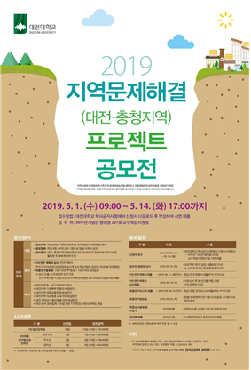
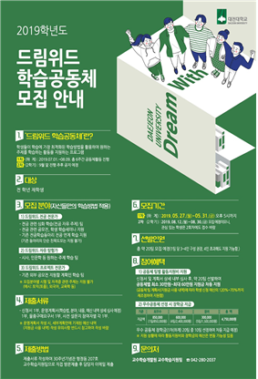

지역문제해결 공모전
♠ 지역문제해결(대전,충청지역) 공모전
♠ 현재 1차 연구 계획서 작성중 (6월11일에 마감)
♠ 팀원 : 권유리, 김도균, 김수하, 황주영
♠ 공모전 소개: 지역사회와 연계하여 자기주도적 문제해결 능력을 배양하고
전공체험현장실무교육을 강화하기 위한 제역문제해결 프로젝트 공모전
공모전
♠ 드림위드 학습공동체 공모전
♠ 현재 1차 연구 계획서 작성 후 제출함
♠ 팀원 : 김수하, 이강민, 이정후, 황주영
♠ 공모전 소개: 학생들이 학습에 가장 최적화된 학승방법을
활용하여 원하는 주제를 학습하는 활동을 지원하는 프로그램